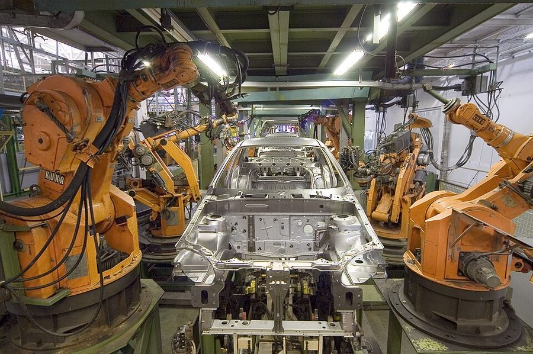
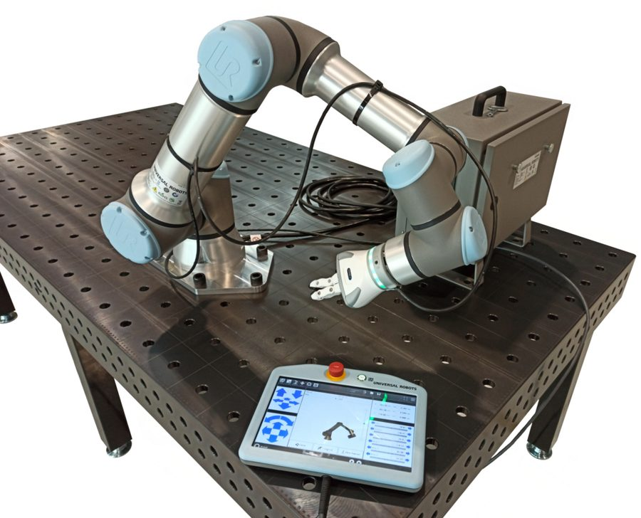
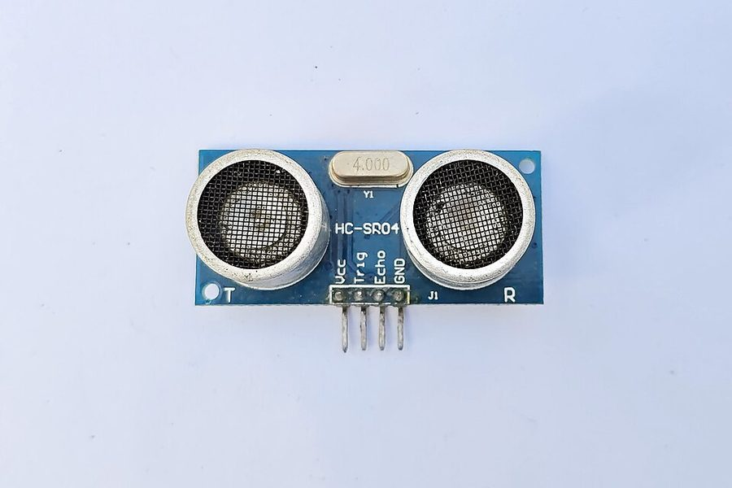
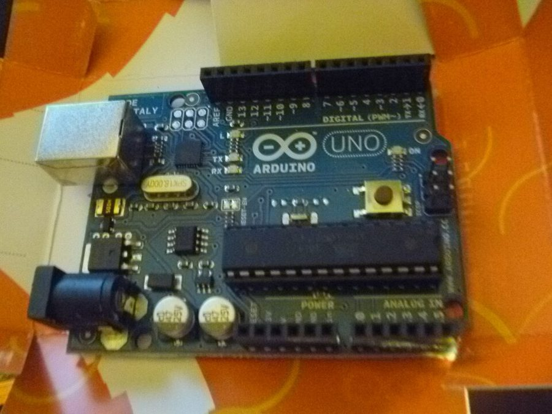
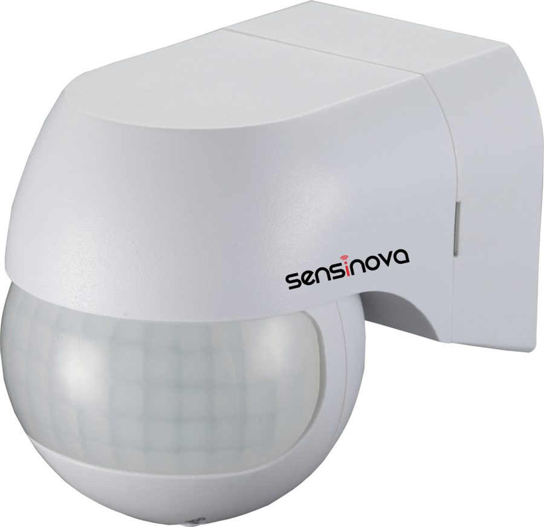

Robótica, sensores e Arduino na Indústria 4.0
Um portal técnico que reúne o catálogo de robôs industriais, o catálogo de sensores IoT, a programação com Arduino e três projetos de automação simulados no Tinkercad — e termina com um quiz para testar o que você aprendeu.

Três trabalhos, um só portal.
Este site unifica as avaliações práticas da unidade curricular de Internet das Coisas: o portal de robôs industriais, o catálogo técnico de sensores e os sistemas de automação inteligente com Arduino. Cada parte mantém o conteúdo original e pode ser acessada pelas abas no topo da página.
Robôs Industriais
Sete topologias — Cartesiano, SCARA, Articulado, Cilíndrico, Delta, Polar e Colaborativo — com princípio de funcionamento, características técnicas, aplicações industriais, integração com IoT e três modelos comerciais de fabricantes distintos.
Inclui os conceitos de IoT e robótica industrial e uma tabela comparativa entre as topologias.

Sensores IoT e Industriais
Vinte e cinco sensores catalogados, de temperatura a RFID. Cada ficha traz conceito, princípio de funcionamento, especificações, tipo de sinal, aplicações, exemplo de projeto e fabricantes.
Use a busca e os filtros por categoria para encontrar o sensor certo.

Arduino na prática
Características da plataforma, comparação entre Arduino Uno e ESP32, boas práticas de firmware e treze exemplos de programação comentados, prontos para copiar.

Projetos de automação
Iluminação, estacionamento e estufa inteligentes montados no Tinkercad: componentes, ligações, regras de funcionamento, código do Arduino e quadro de testes — além dos vídeos com o Arduino físico montado em sala de aula.

Como tudo se conecta
Robôs, sensores e microcontroladores fazem parte da mesma cadeia: medir, comunicar, decidir e agir.
Internet das Coisas
Objetos físicos com sensores, processamento e comunicação que trocam dados entre si e com sistemas de informação sem intervenção humana a cada transação.
Robótica industrial
Pela ISO 8373, um manipulador multifuncional reprogramável, controlado automaticamente e programável em três ou mais eixos.
Sensoriamento
Converte grandezas físicas como temperatura, distância e corrente em sinais elétricos que o controlador consegue ler e usar.
Automação
Usa as leituras dos sensores para decidir e atuar sozinha, com mais produtividade, qualidade, segurança e rastreabilidade.
Pronto para testar o que aprendeu?
Dez questões no estilo SAEP/ENEM sobre robótica, sensores, eletrônica e programação, com correção comentada de cada resposta.